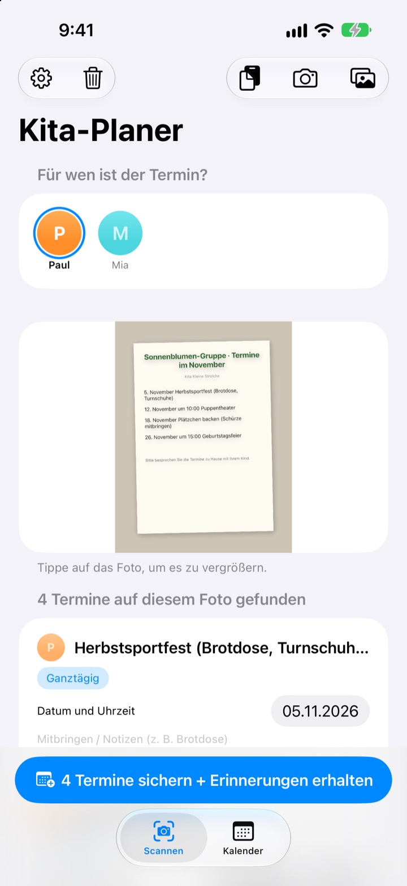
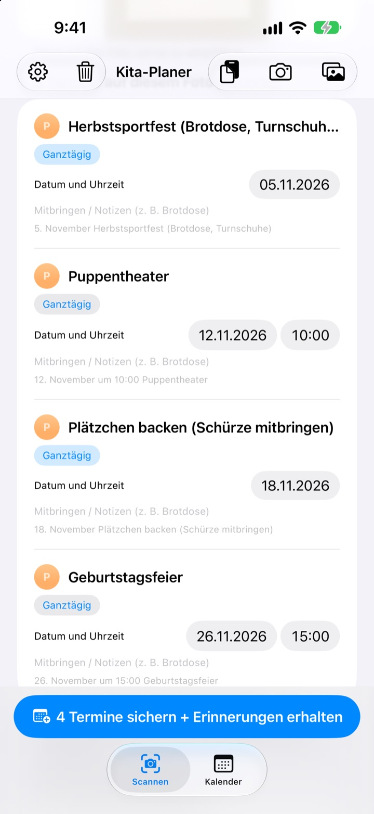
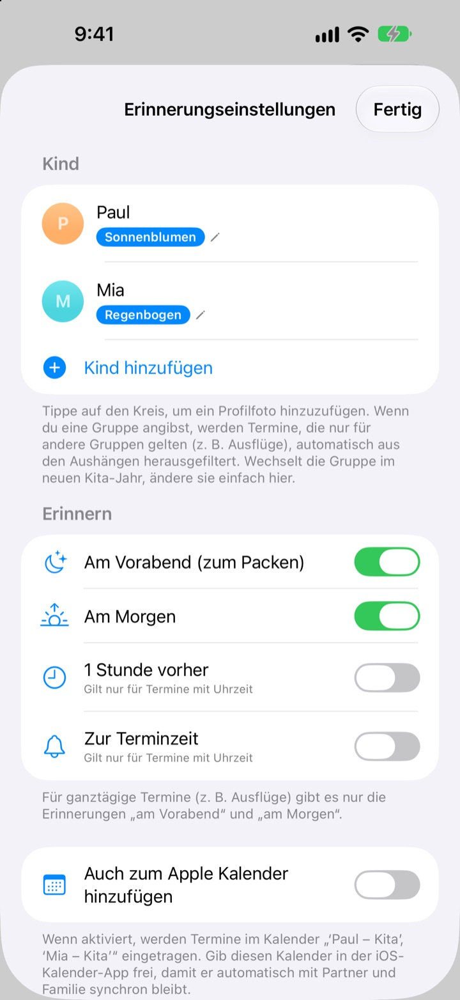
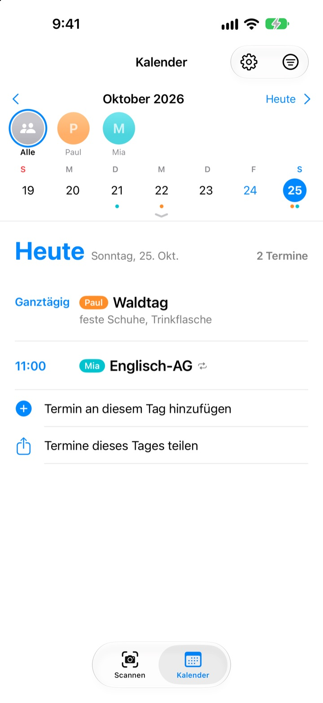

Foto vom Elternbrief.
Erinnerung am Vorabend.
Fotografiere den Monatsplan, den die Kita mitgibt. Kita-Planer liest Datum, Uhrzeit und Namen jedes Termins und trägt alles auf einmal ein. Am Abend vor dem Ausflug, um 20 Uhr, kommt die Erinnerung: Brotdose nicht vergessen.
Alle Funktionen sind kostenlos. Deine Fotos bleiben auf deinem iPhone.

Fotografiere einen Elternbrief
Hier ist ein Beispielbrief mit den Terminen für nächsten Monat. Fotografiere ihn, und wie in der App werden Termine und Mitbringliste herausgelesen und Erinnerungen zu den gewählten Zeiten geplant.
Überträgst du den Elternbrief noch von Hand in den Kalender?
Fünf, sechs Termine im Monat, und jedes Mal muss etwas anderes mit: Brotdose, Sportsachen, Schürze. Der Plan am Kühlschrank ist auf dem Weg zur Arbeit nicht zu sehen, und einfallen tut es einem immer am Morgen selbst. Kita-Planer macht aus dem Zettel Kalendertermine und Erinnerungen.
Ein Foto, ein ganzer Monat
Monatsraster, Elternbrief oder einzelner Aushang: fotografieren oder aus der Mediathek wählen, und Datum, Uhrzeit und Terminname werden ausgelesen. Du kannst auch eine Nachricht der Kita einfügen. Wörter wie „morgen“ oder „diesen Freitag“ werden zu echten Daten.
Vor dem Sichern korrigierst du Titel, Datum oder Mitbringliste direkt und wischst Überflüssiges weg. Hinterlegst du die Gruppe deines Kindes, fallen Termine nur für andere Gruppen automatisch raus.

Am Vorabend wird gepackt
Wähle zwischen 20 Uhr am Vorabend, 7:30 Uhr am Morgen, 1 Stunde vorher oder genau zur Terminzeit. Die Mitbringliste steht in der Erinnerung, damit der Rucksack vollständig ist.
Mit dem Apple Kalender landen die Termine in einem Kalender mit dem Namen deines Kindes, und nichts wird doppelt eingetragen.

Für mehrere Kinder und die ganze Familie
Jedes Kind bekommt eine eigene Farbe. Du siehst alle zusammen oder jedes einzeln, und anhand früherer Termine errät die App, zu wem ein neuer Elternbrief gehört.
Schick einen Einladungslink, und Partner, Großeltern oder Babysitter sehen und bearbeiten dieselben Termine. Ein Widget auf dem Home-Bildschirm zeigt, was als Nächstes ansteht.

In drei Schritten startklar
- 1
Kind anlegen
Name und Gruppe eintragen. Ein Profilfoto kannst du jederzeit ergänzen.
- 2
Elternbrief fotografieren
Gerade von vorn und gut scharf, dann klappt das Lesen am besten.
- 3
Prüfen und sichern
Mitteilungen erlauben, und die Erinnerungen kommen zur gewählten Zeit.
Wann die Erinnerungen kommen
- 20:00 Uhr am Vorabend
- Zum Packen. Standardmäßig an
- 7:30 Uhr am Morgen
- Was heute ansteht. Standardmäßig an
- 1 Stunde vorher
- Nur bei Terminen mit Uhrzeit
- Zur Terminzeit
- Nur bei Terminen mit Uhrzeit
Ganztägige Termine wie ein Ausflug bekommen nur die Erinnerung am Vorabend und am Morgen. In den Einstellungen kannst du jede jederzeit ein- und ausschalten.
Alle Funktionen sind kostenlos
Kostenlos
- Termine aus Fotos und Nachrichten lesen
- Vor dem Sichern korrigieren, andere Gruppen herausfiltern
- Erinnerungen am Vorabend, am Morgen, 1 Stunde vorher und pünktlich
- Eine Farbe pro Kind und ein gemeinsamer Kalender
- Abgleich mit dem Apple Kalender
- Mit der Familie teilen per Einladungslink
- Widget für den Home-Bildschirm
Den Entwickler unterstützen
- In den Einstellungen kannst du ein kleines Trinkgeld in beliebiger Höhe geben
- Trinkgeld schaltet nichts frei. Die App funktioniert so oder so gleich
Keine Werbung, kein Abo.
Häufige Fragen
Welche Fotos funktionieren?
Monatspläne im Raster, Elternbriefe als Fließtext und einzelne Aushänge oder Flyer. Gerade von vorn und mit scharfer Schrift wird am besten gelesen. Du kannst auch mehrere Fotos auf einmal auswählen und scannen.
Ein paar Termine fehlen oder ein Titel hat einen Tippfehler.
Handschrift oder blasse Schrift ist manchmal schwer zu lesen. Korrigiere Titel, Datum oder Mitbringliste direkt in der Liste oder wisch Überflüssiges weg. Fehlende Termine trägst du im Tab „Scannen“ mit „Termin manuell hinzufügen“ ein und sicherst erneut.
Ich bekomme keine Erinnerungen.
Prüfe unter Einstellungen > Mitteilungen > Kita-Planer, ob Mitteilungen erlaubt sind. In den Einstellungen der App (⚙️) wählst du außerdem, welche Erinnerungen du bekommen möchtest.
Es tauchen Termine anderer Gruppen auf.
Trag in den Einstellungen den Gruppennamen deines Kindes ein, dann werden Termine nur für andere Gruppen herausgefiltert. Wechselt die Gruppe im neuen Kita-Jahr, änderst du es nur dort.
Ich habe mehrere Kinder.
In den Einstellungen legst du beliebig viele Kinder an, jeweils mit Profilfoto. Wähl beim Scannen, für wen die Termine sind: Im Kalender hat jedes Kind seine Farbe, und du wechselst zwischen Gesamtansicht und Filter pro Kind.
Wie teile ich die Termine mit meinem Partner?
Tippe in den Einstellungen unter „Termine teilen“ auf „Personen einladen“ und schick den Link per Nachricht. Die eingeladene Person sieht und bearbeitet alle Kinder und Termine, und Änderungen von beiden Seiten erscheinen sofort überall. Das hat nichts mit der Apple Familienfreigabe zu tun.
Gibt es andere Wege zum Teilen?
Über die Teilen-Taste im Tab „Kalender“ verschickst du eine Kita-Planer-Datei, eine Kalenderdatei (.ics) oder eine Textübersicht. Mit „Auch zum Apple Kalender hinzufügen“ entsteht ein Kalender mit dem Namen deines Kindes; teilst du ihn in der Kalender-App über iCloud, ist auch die Familie auf dem Laufenden.
Werden meine Fotos oder Termine irgendwohin geschickt?
Nein. Der Text auf deinen Fotos wird komplett auf dem Gerät gelesen, und die Daten bleiben nur dort. Termine gehen nur dann über deine iCloud, wenn du jemanden über „Termine teilen“ einlädst, und nur an diese Personen.
Probleme oder Wünsche? Schreib an leeo@kakao.com. Wir antworten meist innerhalb von 2 bis 3 Tagen. Gerätemodell und iOS-Version helfen uns weiter.